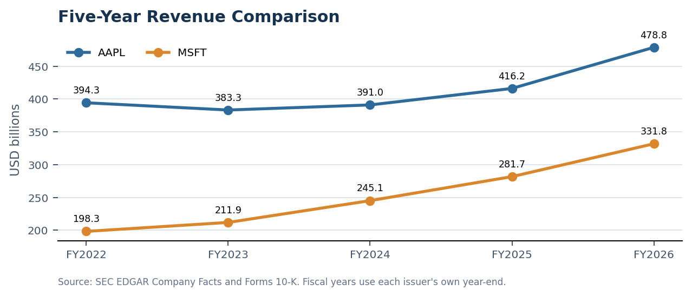
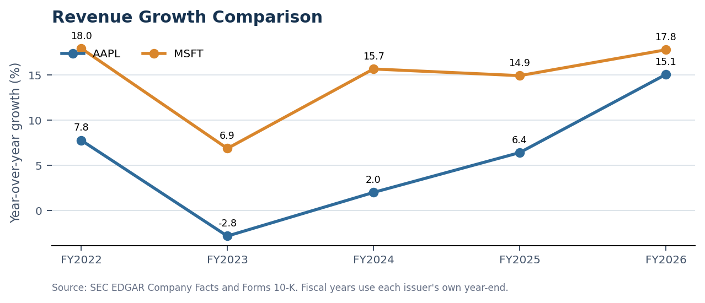
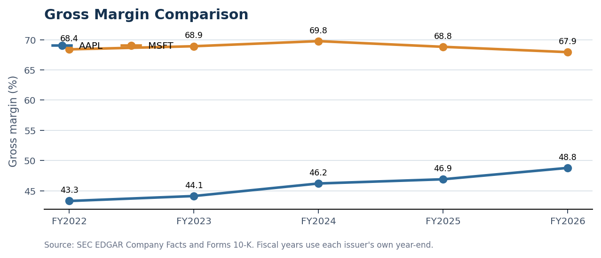
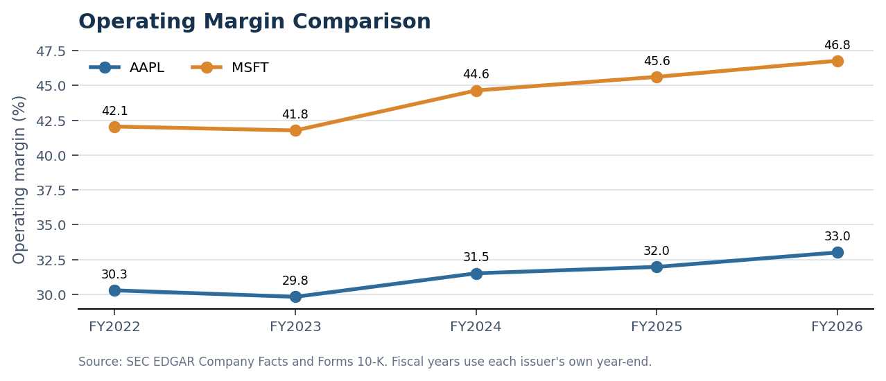
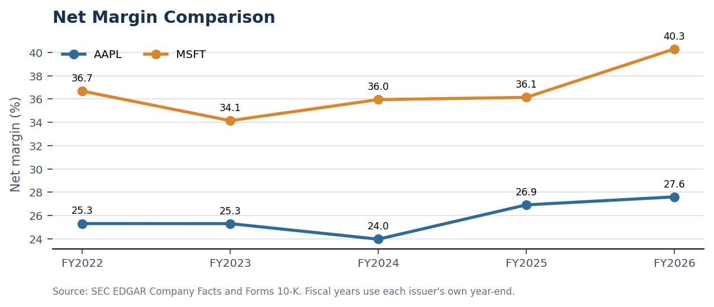
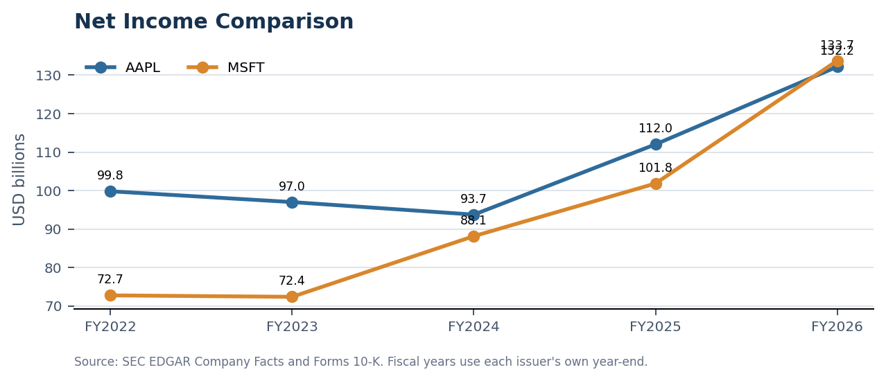
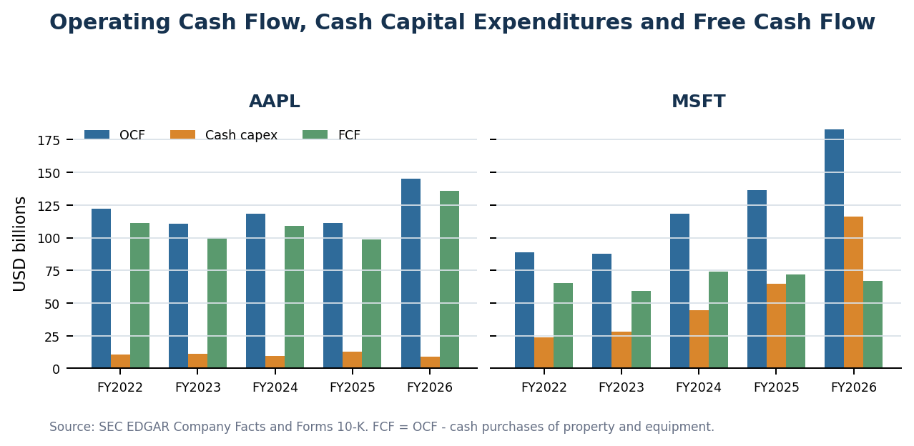

Apple vs. Microsoft: A Five-Year Comparative Fundamental Analysis
1. Executive Summary
Profitability strengthens the case for Microsoft's operating model. Its FY2026 operating margin of 46.8% exceeded Apple's 33.0%, while net income of $133.7bn was slightly above Apple's $132.2bn despite materially lower revenue. The comparison points to the economic advantage of a business mix weighted toward cloud infrastructure and software subscriptions. [5][10]
Cash generation presents the counterweight. Apple produced $136.1bn of derived free cash flow in FY2026 on cash capital expenditures of $9.0bn. Microsoft generated $67.0bn after capital expenditures rose to $115.9bn. Microsoft therefore offers the stronger growth and margin profile, while Apple currently converts revenue into post-capex cash with far lower owned-asset intensity. This report evaluates operating fundamentals and does not provide a valuation or rating. [5][10]
Latest Fiscal Year Scorecard
| Company | FY End | Revenue | Growth | Gross Margin | Op. Margin | Net Margin | FCF |
|---|---|---|---|---|---|---|---|
| AAPL | 2026-09-26 | $478.8bn | 15.1% | 48.8% | 33.0% | 27.6% | $136.1bn |
| MSFT | 2026-06-30 | $331.8bn | 17.8% | 67.9% | 46.8% | 40.3% | $67.0bn |
2. Business Model and Revenue Drivers
Apple combines a global installed base of devices with a growing set of services distributed through the same ecosystem. Hardware remains central to revenue and exposes reported growth to replacement cycles, launch timing, component availability and consumer demand. Services add recurring and higher-margin activity, helping explain why gross margin expanded over the period even when aggregate revenue growth was uneven. Apple's filing identifies products and services as distinct economic streams, so the margin progression is better read as a mix outcome than as a simple pricing effect. [5]
Microsoft's revenue base is more heavily tied to cloud consumption, enterprise software subscriptions and long-duration customer relationships. Azure and related cloud services expand the addressable market and support recurring revenue, while Office, Windows, security, gaming and professional-network products diversify the platform. This structure is consistent with faster consolidated growth and substantially higher margins, but it increasingly requires Microsoft to fund servers, data centers and other AI-related infrastructure before the associated revenue is fully realized. [10]
The difference is not a simple contrast between hardware and software. Apple outsources much of its manufacturing footprint but invests heavily in product development and ecosystem control; Microsoft owns a growing portion of the infrastructure needed to deliver cloud and AI services. The financial statements therefore show Apple as the less capital-intensive cash generator and Microsoft as the faster-growing, higher-margin operator with a rising infrastructure burden. [5][10]
3. Revenue and Growth Analysis
Apple's revenue increased from $394.3bn in FY2022 to $478.8bn in FY2026, a 5.0% CAGR. The path was not linear: revenue declined in FY2023 and grew only modestly in FY2024 before accelerating in FY2025 and FY2026. That pattern is consistent with a mature, product-cycle-sensitive platform whose installed base and services activity can support growth but do not remove annual hardware volatility. [1]-[5]
Microsoft expanded from $198.3bn to $331.8bn over the same fiscal-year labels, producing a 13.7% CAGR. After growth slowed in FY2023, the company returned to mid-teens expansion for the next three years. The steadier acceleration indicates that cloud consumption and subscription revenue provided a broader and more persistent growth engine than Apple's predominantly device-led model. [6]-[10]
The fiscal calendars are not concurrent: Microsoft's year ends on June 30, while Apple's closes in late September. FY labels are retained because they reflect the audited reporting periods used by each issuer, but a difference between same-labelled years should not be interpreted as a comparison of identical calendar months. The conclusions emphasize multi-year direction rather than short-term timing differences. [11][12]


4. Profitability Analysis
Microsoft sustained a structural profitability advantage. FY2026 gross, operating and net margins were 67.9%, 46.8% and 40.3%, respectively, compared with Apple's 48.8%, 33.0% and 27.6%. Software licensing, subscriptions and cloud scale allow a larger share of incremental revenue to reach operating income even as Microsoft funds a substantial engineering and infrastructure base. [5][10]
Apple nevertheless improved gross margin from 43.3% in FY2022 to 48.8% in FY2026, and operating margin rose from 30.3% to 33.0%. The movement indicates that mix and operating discipline strengthened unit economics despite a slower revenue CAGR. Net margin was more variable because below-operating-line items and taxes can obscure the underlying operating trend. [1]-[5]
Absolute diluted EPS is not comparable across the two companies because share counts and repurchase programs differ. Within each company, however, EPS remains useful for assessing whether profit growth and capital returns translated into per-share results. The report therefore includes EPS in the data appendix but bases the cross-company profitability judgment on margins and aggregate income. [1]-[10]




5. Cash Flow and Capital Investment
Apple generated $145.1bn of operating cash flow in FY2026 and spent $9.0bn on property and equipment, leaving derived free cash flow of $136.1bn. Capex represented only 1.9% of revenue. This low cash capital intensity reflects a model in which Apple controls design, software and ecosystem economics without owning the full manufacturing chain. [5]
Microsoft produced higher FY2026 operating cash flow of $182.9bn, but cash capital expenditures reached $115.9bn, or 34.9% of revenue. As a result, free cash flow was $67.0bn, only modestly above its FY2022 level despite the large increase in revenue and operating cash flow. The financial trade-off is direct: AI and cloud capacity can sustain future growth, but near-term cash conversion depends on utilization and monetization catching up with investment. [6][10]
Free cash flow is calculated here as operating cash flow less cash purchases of property and equipment. It is not a GAAP subtotal and does not capture all contractual commitments, finance leases or acquisition spending. The measure is used consistently for both issuers because it isolates the cash cost of sustaining and expanding owned productive assets. [11][12]

6. Comparative Assessment and Key Risks
Microsoft ranks higher on growth persistence and operating profitability, while Apple ranks higher on current revenue scale and post-capex cash efficiency. Neither advantage is unconditional. Microsoft's capital program raises the amount of demand, pricing and utilization required to earn attractive incremental returns. Apple's low capital intensity supports cash generation, but its mature revenue base places more weight on product innovation, installed-base monetization and services mix. [5][10]
For Apple, the key variables are device replacement cycles, services growth and regulation, supply-chain and geographic concentration, and the ability to sustain recent margin gains. For Microsoft, the key variables are Azure and AI revenue growth, data-center utilization, depreciation pressure, energy and chip availability, cybersecurity execution and cloud competition. These risks affect operating outcomes; they do not by themselves establish whether either stock is attractively valued. [5][10]
The preferred monitoring framework is therefore asymmetric. Apple should be evaluated on whether ecosystem monetization can lift growth without sacrificing its exceptional cash profile. Microsoft should be evaluated on whether AI-driven revenue and gross profit scale rapidly enough to absorb the step-up in invested capital. A valuation conclusion would require market prices, forecasts, cost of capital and scenario analysis that are outside this report's historical-fundamentals scope.
7. Methodology
The analysis uses SEC EDGAR Company Facts for standardized GAAP observations and each issuer's original Form 10-K for filing metadata, qualitative interpretation and cross-checking. Eligible facts must be annual 10-K observations marked FY, span 300 to 380 days, match the fiscal year of the period end and use the specified USD or USD-per-share unit. All seven raw metrics are reconciled to non-dimensional consolidated inline XBRL contexts in the corresponding original filing. [1]-[12]
Revenue growth uses the immediately preceding annual revenue observation. Margins divide the relevant GAAP profit measure by revenue. Free cash flow equals operating cash flow less cash purchases of property and equipment, while capex intensity divides that cash expenditure by revenue. The five-year CAGR spans four annual intervals. Figures are displayed in billions and percentages, but calculations use unrounded values.
Apple and Microsoft retain their own fiscal calendars. The approach avoids fabricating calendar-year alignment and explicitly discloses each fiscal year-end. Later amendments or issuer reclassifications can change Company Facts; the cached source files, accession numbers and verification records preserve the exact evidence used for this build. Access dates appear in the references.
Appendix A. Five-Year Core Financial Data
| Company | FY End | Revenue | Growth | Gross Margin | Op. Margin | Net Income | Net Margin | OCF | Capex | FCF | EPS |
|---|---|---|---|---|---|---|---|---|---|---|---|
| AAPL | 2022-09-24 | $394.3bn | 7.8% | 43.3% | 30.3% | $99.8bn | 25.3% | $122.2bn | $10.7bn | $111.4bn | $6.11 |
| AAPL | 2023-09-30 | $383.3bn | -2.8% | 44.1% | 29.8% | $97.0bn | 25.3% | $110.5bn | $11.0bn | $99.6bn | $6.13 |
| AAPL | 2024-09-28 | $391.0bn | 2.0% | 46.2% | 31.5% | $93.7bn | 24.0% | $118.3bn | $9.4bn | $108.8bn | $6.08 |
| AAPL | 2025-09-27 | $416.2bn | 6.4% | 46.9% | 32.0% | $112.0bn | 26.9% | $111.5bn | $12.7bn | $98.8bn | $7.46 |
| AAPL | 2026-09-26 | $478.8bn | 15.1% | 48.8% | 33.0% | $132.2bn | 27.6% | $145.1bn | $9.0bn | $136.1bn | $8.98 |
| MSFT | 2022-06-30 | $198.3bn | 18.0% | 68.4% | 42.1% | $72.7bn | 36.7% | $89.0bn | $23.9bn | $65.1bn | $9.65 |
| MSFT | 2023-06-30 | $211.9bn | 6.9% | 68.9% | 41.8% | $72.4bn | 34.1% | $87.6bn | $28.1bn | $59.5bn | $9.68 |
| MSFT | 2024-06-30 | $245.1bn | 15.7% | 69.8% | 44.6% | $88.1bn | 36.0% | $118.5bn | $44.5bn | $74.1bn | $11.80 |
| MSFT | 2025-06-30 | $281.7bn | 14.9% | 68.8% | 45.6% | $101.8bn | 36.1% | $136.2bn | $64.6bn | $71.6bn | $13.64 |
| MSFT | 2026-06-30 | $331.8bn | 17.8% | 67.9% | 46.8% | $133.7bn | 40.3% | $182.9bn | $115.9bn | $67.0bn | $17.95 |
Appendix B. Data Lineage and Verification
All 70 raw observations were matched to consolidated, non-dimensional inline XBRL contexts in the corresponding original Form 10-K. Derived metrics were recalculated from unrounded values.
Revenue growth = Revenue / prior-year Revenue - 1. Margins = relevant GAAP profit / Revenue. Free cash flow = Operating Cash Flow - cash purchases of property and equipment. Capex intensity = cash capital expenditures / Revenue.
References
- Apple Inc.. Form 10-K for fiscal year ended 2022-09-24. aapl-20220924.htm; filed 2022-10-28. Accessed 2026-11-21. https://www.sec.gov/Archives/edgar/data/320193/000032019322000108/aapl-20220924.htm
- Apple Inc.. Form 10-K for fiscal year ended 2023-09-30. aapl-20230930.htm; filed 2023-11-03. Accessed 2026-11-21. https://www.sec.gov/Archives/edgar/data/320193/000032019323000106/aapl-20230930.htm
- Apple Inc.. Form 10-K for fiscal year ended 2024-09-28. aapl-20240928.htm; filed 2024-11-01. Accessed 2026-11-21. https://www.sec.gov/Archives/edgar/data/320193/000032019324000123/aapl-20240928.htm
- Apple Inc.. Form 10-K for fiscal year ended 2025-09-27. aapl-20250927.htm; filed 2025-10-31. Accessed 2026-11-21. https://www.sec.gov/Archives/edgar/data/320193/000032019325000079/aapl-20250927.htm
- Apple Inc.. Form 10-K for fiscal year ended 2026-09-26. aapl-20260926.htm; filed 2026-11-03. Accessed 2026-11-21. https://www.sec.gov/Archives/edgar/data/320193/000032019326000026/aapl-20260926.htm
- Microsoft Corporation. Form 10-K for fiscal year ended 2022-06-30. msft-10k_20220630.htm; filed 2022-07-28. Accessed 2026-11-21. https://www.sec.gov/Archives/edgar/data/789019/000156459022026876/msft-10k_20220630.htm
- Microsoft Corporation. Form 10-K for fiscal year ended 2023-06-30. msft-20230630.htm; filed 2023-07-27. Accessed 2026-11-21. https://www.sec.gov/Archives/edgar/data/789019/000095017023035122/msft-20230630.htm
- Microsoft Corporation. Form 10-K for fiscal year ended 2024-06-30. msft-20240630.htm; filed 2024-07-30. Accessed 2026-11-21. https://www.sec.gov/Archives/edgar/data/789019/000095017024087843/msft-20240630.htm
- Microsoft Corporation. Form 10-K for fiscal year ended 2025-06-30. msft-20250630.htm; filed 2025-07-30. Accessed 2026-11-21. https://www.sec.gov/Archives/edgar/data/789019/000095017025100235/msft-20250630.htm
- Microsoft Corporation. Form 10-K for fiscal year ended 2026-06-30. msft-20260630.htm; filed 2026-07-29. Accessed 2026-11-21. https://www.sec.gov/Archives/edgar/data/789019/000119312526323660/msft-20260630.htm
- U.S. Securities and Exchange Commission. Apple Inc. Company Facts (aapl_companyfacts.json). Accessed 2026-11-21. https://data.sec.gov/api/xbrl/companyfacts/CIK0000320193.json
- U.S. Securities and Exchange Commission. Microsoft Corporation Company Facts (msft_companyfacts.json). Accessed 2026-11-21. https://data.sec.gov/api/xbrl/companyfacts/CIK0000789019.json